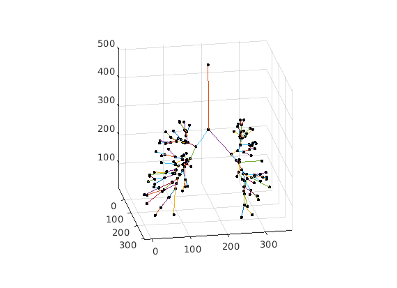

Contents
AirQuant Quickstart (Clinical Airways)
A quickstart tutorial to get going with AirQuant's functionality with example data!
tic % You may need to run `AirQuantAddPath` before running this script to % configure MATLAB to run AirQuant. AirQuantDir = AirQuantAddPath();
See <a href = "https://airquant.readthedocs.io/">AirQuant Documentation</a> for help.
Download Data
First download the data!
dataname='chestct';
AQdownload_data(dataname);
See <a href = "https://airquant.readthedocs.io/">AirQuant Documentation</a> for help. Downloading AirQuant dataset, "chestct" of 257 MB. This may take a while depending on your connection. This case is from an opensource dataset, please see AirQuant readme for credits.
Load data
get data from nifti images into arrays and header variables.
% get CT, segmentation and skeleton images of the case CT_name = [dataname, '_source.nii.gz']; seg_name = [dataname, '_airway.nii.gz']; skel_name = [dataname, '_airway_PTKskel.nii.gz']; % Load data into relevant formations from nifti images. % Load the source CT metadata information meta = niftiinfo(CT_name); % Load CT data as double source = double(niftiread(meta)); % Load Airway segmentation and its skeleton as logicals seg = logical(niftiread(seg_name)); skel = logical(niftiread(skel_name));
Make AirQuant object of data
There are lots of options here, be sure to check the documentation. This will process the skeleton of our image into its components for the AirQuant framework. Is the major step where the airway tree is broken down into its constituent branches. Splines are fitted to each branch, making the backbone of our analysis.
AQnet = ClinicalAirways(skel, source=source, header=meta, seg=seg, fillholes=1, largestCC=1, plane_sample_sz=0.5, spline_sample_sz=0.5); % note: if you are running this in a live matlab script then the progress bar % will not function properly. % ClinicalAirways class has its own method for implementing automated lobe classification. We can call this to run on our image. % The colour option can also be called for any visualisation method. Here % it is called to show the lobes. AQnet.ClassifyLungLobes();
Dimensions in physical units, usually millimetres. Voxel dimensions = 0.63672 0.63672 0.5 Patch sampling size = 0.5 Spline sampling size = 0.5 Max plane size = 40 142 tubes found. Tubes:SetGeneration : 100% |██████████████████████████████████████| 142/142it [00:00:00<00:00:00, 6034.59 it/s] Tubes:ComputeDirecti: 100% |██████████████████████████████████████| 142/142it [00:00:00<00:00:00, 2301.65 it/s] Tubes:ComputeChangeA: 100% |██████████████████████████████████████| 142/142it [00:00:00<00:00:00, 7402.39 it/s] Tubes:ComputeParentA: 100% |██████████████████████████████████████| 142/142it [00:00:00<00:00:00, 7465.43 it/s] Tubes:ComputeSibling: 100% |██████████████████████████████████████| 142/142it [00:00:00<00:00:00, 6818.40 it/s] Tubes:SetGeneration : 100% |██████████████████████████████████████| 142/142it [00:00:00<00:00:00, 6249.72 it/s]
Basic visualisation
There are lots of visualisation options. Here we cover some basic options.
figure;
AQnet.Plot3D();
figure; AQnet.Plot3();
figure; AQnet.Plot();
% note that the edge labels correspond to the segment indicies
 Advanced visualisation
We can use the lobe region classifications to further enrich our visualisation. Checkout the documentation for more advanced visualision use cases.
figure; AQnet.Plot(colour='lobe', weight='generation', weightfactor=10); title('Edge weighted by generation') figure; AQnet.Plot3D(colour='lobe'); % `Plot3D` can be resourse demanding on your specs. You maywant to % skip it. figure; AQnet.PlotSpline(colour='lobe');
Export values to csv
Finally we can export our values to a csv file for easy analysis in our next favourite package!
AQnet.ExportCSV('example.csv'); % print first 10 rows of example.csv T = readtable('example.csv'); T(1:10,:) toc
ans =
10×15 table
ID children_1 children_2 children_3 generation method parent region_lobe region_name stats_arclength stats_change_deg stats_euclength stats_parent_deg stats_sibling_deg stats_tortuosity
__ __________ __________ __________ __________ ______ ______ ___________ ____________________ _______________ ________________ _______________ ________________ _________________ ________________
1 2 3 NaN 0 NaN NaN {'T' } {'Trachea' } 109.42 16.708 106.45 NaN NaN 1.0278
2 4 5 NaN 1 NaN 1 {'B' } {'LeftMajor' } 59.976 11.784 57.322 36.332 141.72 1.0463
3 6 7 NaN 1 NaN 1 {'B' } {'RightMajor' } 37.229 40.222 34.813 105.86 141.72 1.0694
4 8 9 NaN 2 NaN 2 {'LLL'} {0×0 char } 13.42 61.068 12.467 93.493 121.23 1.0764
5 10 11 NaN 2 NaN 2 {'B' } {'LeftIntermedius' } 12.758 31.189 12.367 28.605 121.23 1.0316
6 12 13 NaN 2 NaN 3 {'B' } {'RightIntermedius'} 23.72 68.463 22.419 54.851 127.15 1.058
7 14 15 16 2 NaN 3 {'RUL'} {0×0 char } 15.757 10.596 15.312 79.511 127.15 1.029
8 17 18 NaN 3 NaN 4 {'LLL'} {0×0 char } 20.557 46.134 19.925 111.5 129.92 1.0317
9 19 20 21 3 NaN 4 {'LLL'} {0×0 char } 9.7253 27.097 9.2612 22.602 129.92 1.0501
10 22 23 NaN 3 NaN 5 {'LML'} {0×0 char } 16.521 14.084 16.446 57.132 44.191 1.0045
Elapsed time is 69.855670 seconds.